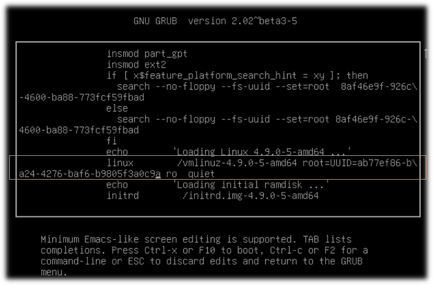
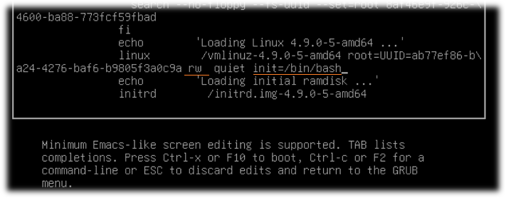

Случаются ситуации, когда из-за неправильного конфига система не может загрузиться, либо забыт пароль от root. В таких ситуациях нужно как-то зайти в систему и исправить ситуацию.
1. Перезагрузиться в GRUB, выбрать (если есть) пункт Recovery Mode и попробовать загрузиться в него.
2. Если это не помогло, то перезагрузиться в GRUB ещё раз, навести курсор на Recovery Mode, нажать клавишу "e" для редактирования.
3. Находим строку начинающуюся с linux:

4. В конце строки меняем значение "ro" на "rw", а в самом конце дописываем вызов оболочки: "init=/bin/bash":

5. Нажимаем F10. Мы получили беспарольный root-доступ к системе!
6. Исправляем файл конфигурации, перезагружаемся нормально.
7. Для сменя пароля делаем:
passwd